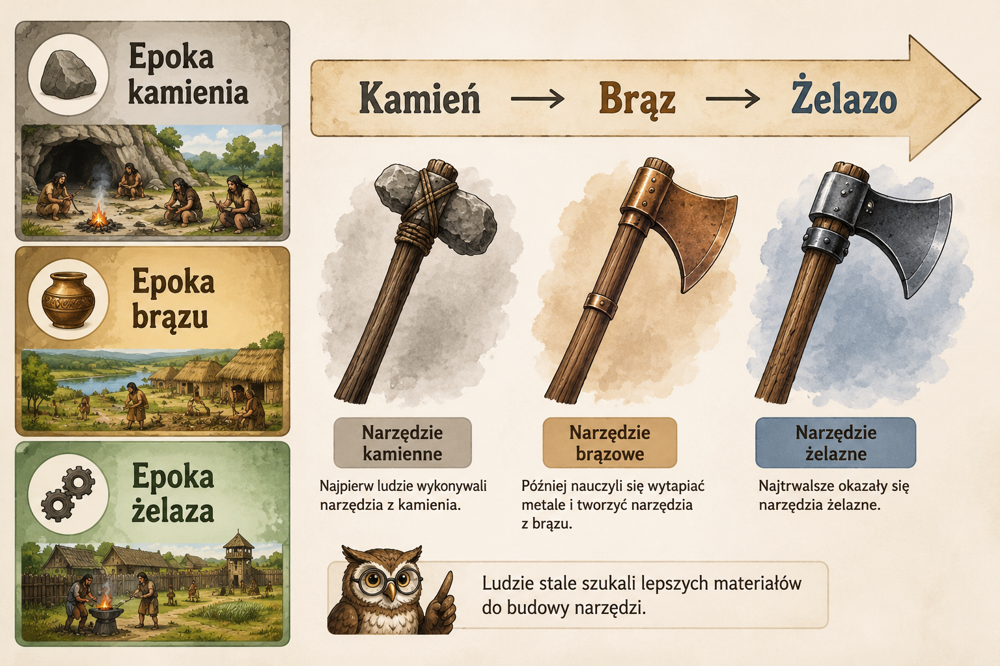
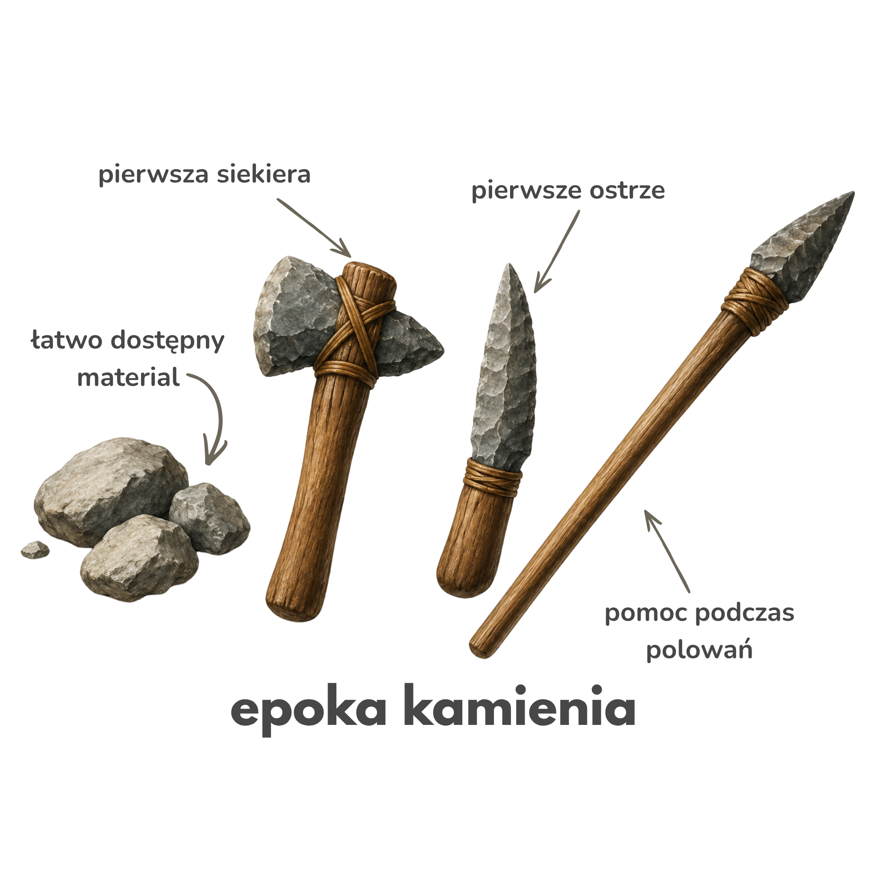
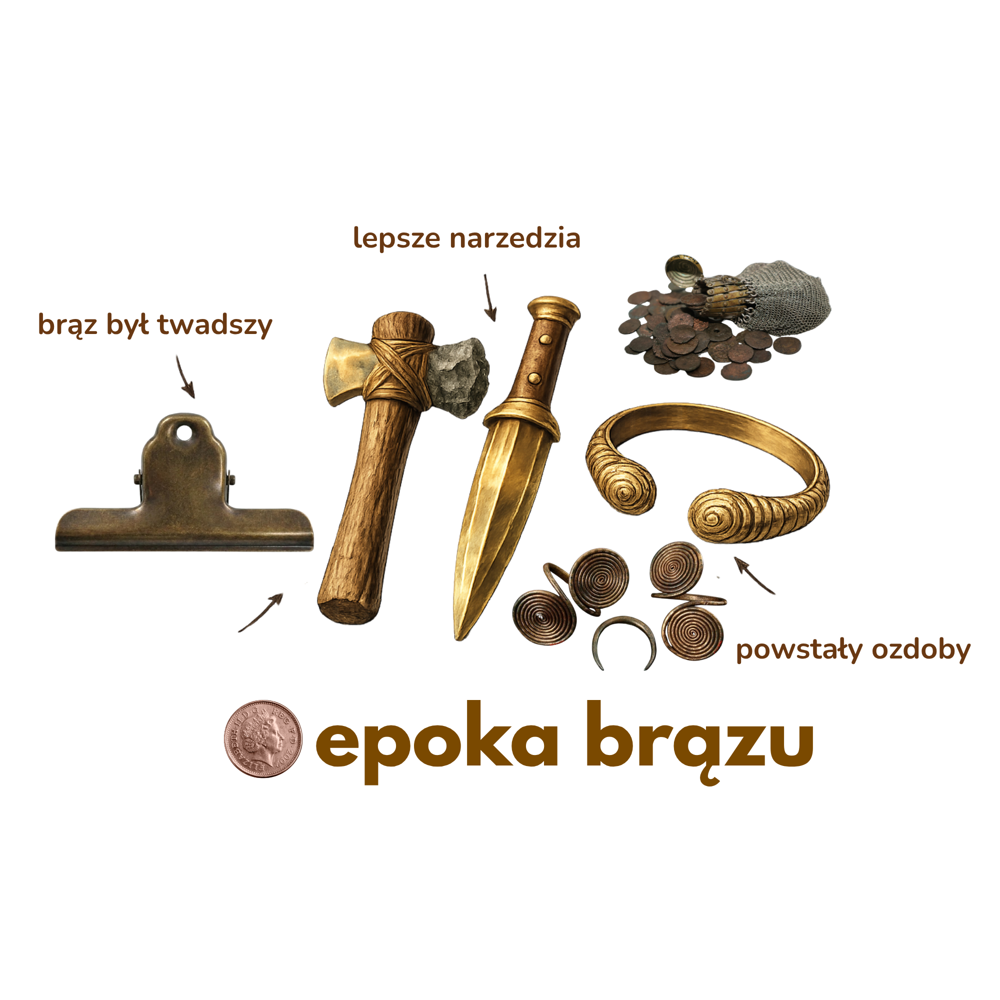
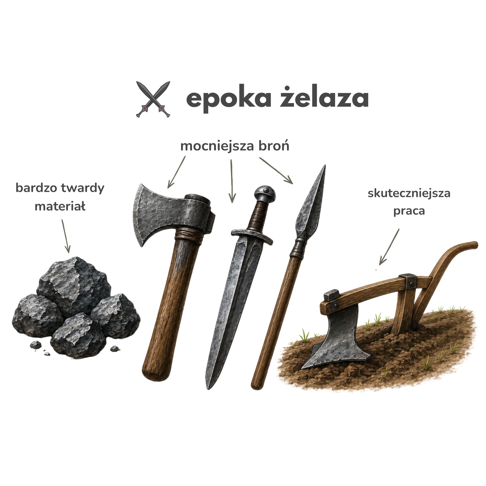
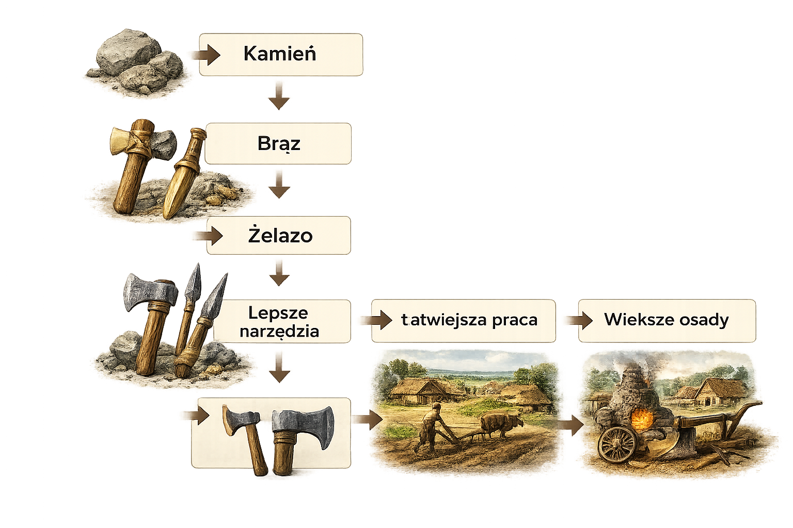

⚒ 11. Od kamienia do żelaza
⚜
Ludzie stale szukali lepszych narzędzi.
Najpierw używali kamienia, później brązu, a następnie żelaza.
🪨 Epoka kamienia
Epoka kamienia rozpoczęła się, gdy pierwsi ludzie zaczęli używać narzędzi wykonanych z kamienia. Trwała bardzo długo i była pierwszym etapem dziejów człowieka.
Narzędzia wykonywano głównie z kamienia.

🥉 Epoka brązu
Epoka brązu to druga z kolei epoka prehistorii. Występuje po epoce kamienia i przed epoką żelaza.
Ludzie nauczyli się wytapiać metale i tworzyć z nich narzędzia oraz ozdoby. Brąz był twardszy od kamienia, dlatego ułatwiał codzienną pracę.
Ludzie nauczyli się wytapiać metale.

⚔ Epoka żelaza
Z czasem ludzie nauczyli się wykorzystywać żelazo. Było ono jeszcze bardziej wytrzymałe niż brąz. Dzięki temu powstawały lepsze narzędzia i skuteczniejsza broń.
Żelazo było jeszcze bardziej wytrzymałe.

📈 Co się zmieniało?


🦉 Sowa Historyk
Każda kolejna epoka przynosiła coraz lepsze narzędzia.
➜ Jak myślisz, które narzędzie było najważniejsze?